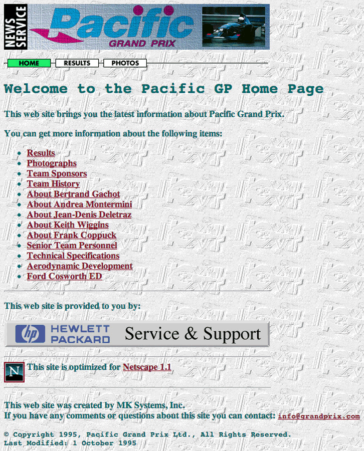
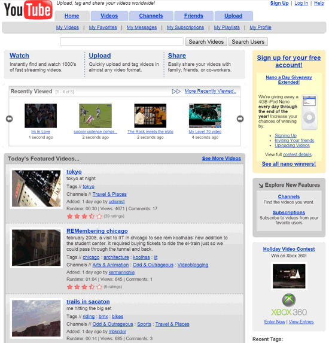
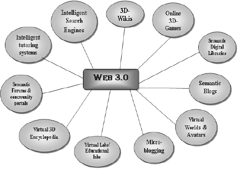

The Evolution of the Web
The internet has become a very important part of our daily lives. It's used for entertainment, education, shopping, and much much more. Anyone with an internet connection has access to millions of pages of information, and the web can even support utilies such as file converters or video editors that users can access with nothing but a web browser.
Web 1.0
The first stage of the internet only consisted of static, unchanging websites with little CSS. The content on the page is limited to what the website owner uploads, so they would need to re-upload their files to the web server in order for the website to change.
Web 2.0
In Web 2.0, sites were able to be automatically updated from user input, which means users can post their own content on sites like YouTube and MySpace. AJAX and JavaScript frameworks can also be used to create responsive, interactive content, as well as web applications which can perform a variety of functions. Web 2.0 also works with the cloud, which is really just vast data centers around the world storing all kinds of data from user login information to personal files stored in cloud storage services such as Google Drive.
Web 3.0
Web 3.0 is known as the Semantic Web. Semantic Web means that the information on websites can be automatically read by machines, as well as being able to be understood naturally by humans. Web 3.0 also makes way for websites to create APIs, which is a way to communicate with the website programmatically. Web 3.0 is home to even more features, such as behavioural advertising, applications using AI, and even more advanced content.
